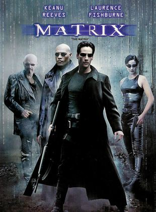

Matrix
Sinopse
 Em um futuro próximo, Thomas Anderson, um jovem programador de computador, é atormentado por estranhos pesadelos nos quais encontra-se conectado por cabos contra sua vontade, em um imenso sistema de computadores do futuro. Em todas essas ocasiões, acorda gritando no exato momento em que os eletrodos estão para penetrar em seu cérebro. À medida que o sonho se repete, ele começa a ter dúvidas sobre a realidade. Por meio do encontro com os misteriosos Morpheus e Trinity, Thomas descobre que é, assim como outras pessoas, vítima de Matrix, um sistema de inteligência artificial que manipula a mente das pessoas, criando a ilusão de um mundo real enquanto usa os cérebros e corpos dos indivíduos para produzir energia.
Resenha
Em 1999, o mundo conectado vivia a apreensão tecnológica do bug do milênio. Essa pre-millennium tension projetava uma problemática virada para o ano 2000 que, por um erro de programação computacional, poderia causar uma pane informática generalizada. O apagão cibernético foi evitado, porém as máquinas não deixaram 1999 passar em branco. Pelo menos não no cinema! A ficção científica Matrix fez história ao apresentar o planeta Terra dominado por uma inteligência artificial responsável pela destruição do nosso habitat e pela escravização da espécie humana após a maior de todas as guerras. Naquele final de século XX, pré-Columbine, pré-Battle in Seattle, pré-11 de setembro e definitivamente pré-WikiLeaks, o politicamente correto castrador já vinha desenhando-se na cultura pop do Ocidente, mas estava longe de atenuar a liberdade discursiva no mainstream como ocorre hoje. No período em questão, a grande indústria do cinema norte-americano ainda estava aberta a roteiros de oposição ideológica ao estabelecido.
Hacker introspectivo, mas revoltado assim como tantos de sua linhagem, incluindo o icônico Case, de Neuromancer, obra de William Gibson que funda o termo cyberpunk, ou mesmo a gélida Lisbeth Salander, da trilogia Millennium, de Stieg Larsson, Neo desconfia de tudo e de todos. Sabe que algo está errado em seu cotidiano enfadonho, mas não entende exatamente o que. Passa horas em frente ao computador buscando respostas, mas não consegue formular as devidas perguntas. Em seu desconforto, alterna insônia com sono profundo, dormência e alerta, em um movimento pendular desgastante. Porém, quando consciência e inconsciência misturam-se a realidade deixa de ser confiável. Nesse torpor cognitivo, as dúvidas de Neo aumentam quando o personagem recebe em seu desktop uma mensagem simples, mas enigmática: “Matrix tem você. Siga o coelho branco”. O paralelo com Alice no País das Maravilhas é um convite para entrar em uma espiral sem volta. Em sua confusão de sentidos, acaba conhecendo Trinity , hacker old school que o vigiava e que o instiga lançando novos questionamentos sobre sua condição nebulosa.
Emissária do mentor Morpheus, Trinity amplia as inquietações de Neo ao afirmar que ele corre perigo sem saber o motivo. Mais do que isso, mostra conhecimento sobre as inquietações do protagonista ao apontar que a resposta que tanto busca refere-se a uma pergunta que ele já sabe formular, pois ambas o cercam cotidianamente. Para elaborá-la, basta olhar ao redor com mais atenção. Mas o que está ao redor? Tudo. O todo. E o que é o todo senão o próprio mundo no qual Neo não se encaixa? Então o mundo é Matrix? “O que é Matrix?”, questiona o personagem como quem pergunta qual o sentido da vida. E este é o ponto central da trama.
Matrix e Filosofia
"A Matrix foi projetada para manter os humanos na “doce ilusão” de viver nesse mundo cheio de conforto e prazeres, quando na verdade o mundo foi completamente destruído. Nessa narrativa, os homens na verdade vivem como fetos estáticos imersos no útero (matrix em latim significa “útero”) enquanto possuem uma atividade cerebral intensa que propicia a vida que eles acreditam ter."
Sócrates descobriu que há uma “Matrix” ou uma “Caverna” que a todos nós aprisiona e engana. Ele defendeu que a saida dessa caverna é buscar o conhecimento, deixando de lado as crenças vulgares, os preceitos sociais, os preconceitos, dogmas, a cultura imposta ou qualquer outro elemento que possa impedir o homem de acessar o puro conhecimento. Conquistando esse saber, o homem consegue sair da escravidão, da servidão que o aprisiona.